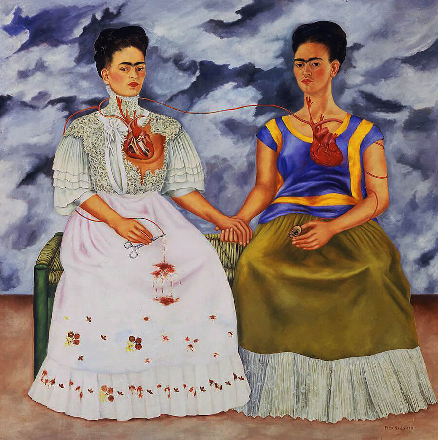
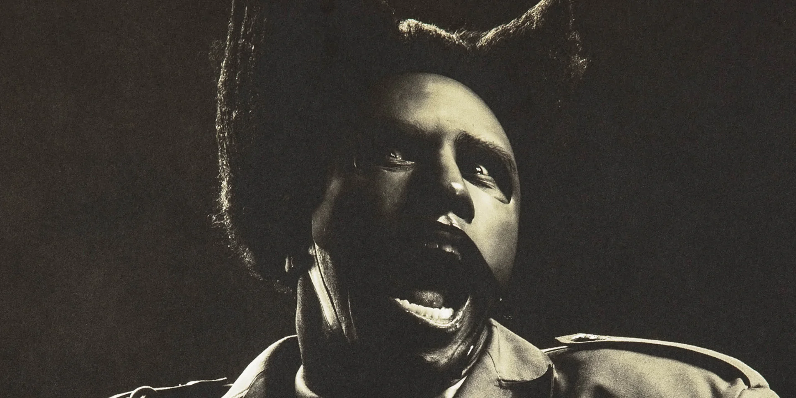

Claude Monet

Claude Monet inspires me with his dreamy light and soft colors. His landscapes show how gentle brushstrokes can create a peaceful, magical scene.
Here is where I showcase my artistic inspirations.

Frida's paintings inspire me with their strong emotion and powerful self-expression. I love how she uses bright colors and personal storytelling to share feelings through her art.
Claude Monet inspires me with his dreamy light and soft colors. His landscapes show how gentle brushstrokes can create a peaceful, magical scene.

Tyler inspires me because he blends music, fashion, and art into one bold style. His creativity feels fearless, and I love how he expresses himself in many different ways.
Each inspiration shows a part of who I want to become as an artist: honest, colorful, and unique. I hope my own work can capture emotion and feel as real as these inspirations.